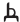
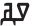
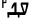

This page gathers together basic information about the N’Ko script and its use for the Kangbe koiné. It aims (generally) to provide an overview of the orthography and typographic features, and (specifically) to advise how to write N’Ko using Unicode; for greater details follow the footnote links (especially those with an arrow alongside them).
For similar information related to this and other scripts, see the script links pages.
Clicking on red text examples, or highlighting part of the sample text shows a list of characters. Click on the vertical blue bar (bottom right) to change font settings for the sample text. Colours and annotations on panels listing characters are relevant to their use for the Kangbe koiné.
Unless in parentheses, the transcriptions in italics that follow Tamil text are a transliteration developed for these pages. Those in parentheses are usually ISO transcriptions. Transcriptions in ⌈ brackets ⌋ may be phonemic or phonetic.
The N'ko script was created in 1949 by Soloman Kante to write the Bambara language, one of the Manding languages spoken in Mali, in response to a newspaper article reflecting the colonial misconception that Africans were culturally inferior due to their lack of indigenous writing systems. The word N'ko means "I say" in all the Manding languages. Kante had travelled widely throughout West Africa, and his knowledge of the Arabic script influenced his invention.
N'ko is also used to write the Kangbe language - a literary (that is, predominantly written as opposed to spoken) language which combines the features of various Manding languages, is understandable by all literate Manding speakers and is used in situations where speakers of different Manding languages need a neutral means of communication. Its role as a literary language has contributed to N'ko's status as one of the most widely used indigenous West African scripts, which has in turn been instrumental in fulfilling one of the functions for which Kante had designed it; the strengthening of Manding cultural identity in the region. The N'ko literacy movement operated largely on the fringes of formal education, which was conducted in the Latin script. Despite receiving no government funding or endorsement, and having no official curriculum, it succeeded because it exploited the desire of the Manding people to define and possess their identity.
In 1986 l’Association pour l’Impulsion et la Coordination des Recherches sur l’Alphabet N’ko (ICRA-N’KO) was established, and officially approved as an NGO for the promotion of N'ko five years later. The script is currently used in Guinea and Côte d'Ivoire as well as Mali, and has been used for publications relating to indigenous knowledge, including descriptions of medical rituals, traditional poetry, and philosophical works, as well as textbooks and a transcription of the Qur'an.
N'Ko (ߒߞߏ) is both a script devised by Solomana Kante in 1949, as a writing system for the Manding languages of West Africa, and the name of the literary language written in that script. The term N'Ko means I say in all Manding languages.
As of 2005, it is used mainly in Guinea and the Ivory Coast (respectively by Maninka and Dyula speakers), with an active user community in Mali (by Bambara-speakers). Publications include a translation of the Quran, a variety of textbooks on subjects such as physics and geography, poetic, and philosophical works, descriptions of traditional medicine, a dictionary, and several local newspapers. It has been classed as the most successful of the West African scripts. The literary language used is intended as a koiné blending elements of the principal Manding languages (which are mutually intelligible), but has a very strong Maninka flavour.
The N'Ko script is an alphabet. Both consonants and vowels are indicated by letters. See the table to the right for a brief overview of features for the N'Ko script, taken from the Script Comparison Table.
The following list describes some distinctive characteristics of the N'Ko script.
The script is normally cursive, but in certain circumstances a non-joining font styles may be used.
The script is written right-to-left, but unusually digits are not written left-to-right within the RTL flow.
N'Ko has (many) tone marks. Many diacritics (including some tone marks) have more than one use.
An unusual feature is that If two adjacent consonants are followed by the same vowel, the vowel is omitted after the first consonant.
The base repertoire is significantly extended, using diacritics, to cover sounds in foreign languages – particularly Arabic and French.
Character lists show:
Text direction
N'Ko script is written right-to-left.
Unlike other RTL scripts, such as Arabic and Hebrew, numbers are also written right-to-left.
ߏ߬ ߞߏߛߐ߲߬߸ ߂߀߀߉ ߞߊߙߏ߫ ߁߀߲/߂߂
Click on this example, which contains numbers and words, to see how the order of characters in memory matches the simple right-to-left order as displayed.
Vowels
Vowel sounds
Vowel characters
There are 7 vowel characters:
ߊ␣ߋ␣ߌ␣ߍ␣ߎ␣ߏ␣ߐ
Each can carry a tone mark and a nasalisation mark.
If two adjacent consonants are followed by the same vowel, the vowel is omitted after the first consonant. (There is no ambiguity here with consonant clusters, since in the latter case the dagbasinna would appear.) u
Tone marks
߫␣߬␣߭␣߯␣߰␣߱␣߮␣ߴ␣ߵ
Diacritics are used to indicate tones, and which is used depends on the length of the vowel, per the following table. w
Tone marks should be typed and stored after any nasalisation marker.
Nasalisation
The low diacritic ߲[U+07F2 NKO COMBINING NASALIZATION MARK] is applied to a vowel to indicate nasalisation. This may produce multiple combining marks attached to a single character.
ߣߌ߲߬
A nasalisation mark attached to a letter that already has a combining character.
This mark should be typed and stored before any tone mark to preserve the canonical order. u
Three diacritics, two of them tone markers, are used to represent foreign sounds (particularly Arabic and French) in conjunction with existing N'Ko letters, eg. ߛ߳sx̣ represents the arabic sound θ (ث). u
For example, ߓߐߗ߭ߎߙ. ߓߌߢߍ߲ ߝ߭ߋߣߎ߳.bɔʧ³ur. biɲɛx̃ f³enux̣. (bɔʒur. biñɛ̃ veny)Bonjour. Bien venue.
Archaic consonants
ߨ␣ߩ␣ߪ
The Unicode Standard lists 3 consonants that are archaic forms of other characters in the N'Ko block. The new shapes were only introduced in the latter writings of the inventor of the script, Solomana Kante. (Their inclusion in the block generated some controversy.y m)
Adjacent consonants with no intervening vowel sound are indicated using ߑ[U+07D1 NKO LETTER DAGBASINNA], eg. ߓߟߏblobolo is pronounced with the vowel after the first letter, even though none is present, because of the rule explained above. To show that this should be pronounced without the vowel you need ߓߑߟߏbˣloblo. u
Other letters
There is one other character in the N'Ko block with the general category of letter.
Although some of the N'Ko diacritics look like those in general use, you should use the ones provided in this block. This is because they are typically drawn higher and bolder than the generic marks, and have a wider range of glyph variation. u
The dantalayan was introduced in Unicode 11. See abbreviation.
N'Ko may also use Arabic punctuation marks such as the following (see phrase).
،␣؛␣؟␣﴾␣﴿
Numbers
Digits
N'Ko uses native digits.
߀␣߁␣߂␣߃␣߄␣߅␣߆␣߇␣߈␣߉
However, unlike other right-to-left scripts such as Arabic, Hebrew, Thaana, the numbers are displayed right-to-left, with the most significant digit first.u This means that numbers don't produce bidirectional text in N'Ko.
ߝߌߟߊߣߊ߲ ߕߋ߬ߟߋ߫ ߂߇-߂߈/߂߀߁߀ ߕߊ߬ߡߌ߲߬ߣߍ߲ ߠߊ߫߸
A date in N'Ko. All characters are read right to left, including numbers.
Others use ߲[U+07F2 NKO COMBINING NASALIZATION MARK], eg. ߂߲second. When there are multiple digits in a number, the diacritic appears only under the last in sequence, eg. ߁߂߃߲123rd. u
Currency
Unicode 11 introduced 2 currency symbols to represent the dorome and taman.e The symbols precede the numeric amounts.
߾␣߿
An amount of 5 dorome and 95 taman is written like this:
Glyph shaping & positioning
N'Ko has no case distinction, and no character transforms are needed.
Are Unicode joiner and non-joiner characters needed to override default joining behaviours?
N'Ko is usually cursive, ie. letters in a word are joined up.
Fonts need to produce the appropriate joining form for a code point, according to its visual context.
ߕߟߋ߬ߓߊ߰ߓߟߐߟߐ
Cursive connections in a word. Note that here is both a medial and final form of ߐ.
The cursive treatment doesn't produce significant variations of the essential part of the glyph for a character (unlike Arabic).
Non-cursive fonts are sometimes used, mainly as display fonts for book and article titles. u
Context-based positioning
The Noto Sans Nko font changes the height of diacritics according to the height of the base character.
ߊ߬ߟߎ߬
The height of diacritics depends on the base consonant.
A base character may carry multiple combining characters.
ߣߌ߲߬
Multiple diacritics attached to the same base consonant.
Baselines & inline alignment
Does the script have special requirements for baseline alignment between mixed scripts and in general?
Font styles
N'Ko uses italicisation and bolding.
Left-leaning italics in N'Ko.
Italics may need to lean to the left, rather than to the right. Neil Patel writes:
Formalized typographic practices for both Adlam and N'ko are still being developed. When [JamraPatel] reached out to both communities to see if an Italic typeface would be beneficial, both communities expressed a desire to have one. Over the past few years, as the ability to use both of these scripts more readily in computing has increased, the need to be able to set more complex copy has increased as well. Both communities see the benefit of having italic typefaces to add some semantic value to their copy. On-line N'ko has historically used synthetic obliques for things like by-lines on articles. ...
Since neither script had any precedent for a drawn italic typeface, we asked each community on how they would like to see it drawn. This is how N'ko ended up with the leftward lean and Adlam with a rightward lean in our typeface. ... To my knowledge our typeface has the first drawn italicized N'ko and Adlam, so this is all still a bit new.g
Structural boundaries & markers
Grapheme boundaries
Do Unicode grapheme clusters appropriately segment character units for the script? Are there special requirements when double-clicking on the text, or moving through the text with the cursor, or backspace, etc.?
Word boundaries
Words are separated by spaces.
The te-kerende is a common way of linking compounds together. It sits on the baseline, and breaks cursive joining. It was proposed for inclusion into Unicode, but not adopted. However, I'm unable to find any rationale for the lack of adoption. In these examples, I am using ߺ [U+07FA NKO LAJANYALAN] surrounded by spaces to create an idea of how te-kerende should look: ߡߐ߰ ߺ ߐ ߺ ߡߐ߰mɔ⁶ _ ɔ _ mɔ⁶everyone, ߛߌ ߺ ߌ ߺ ߛߌsi _ i _ sianyone.e
Line-breaks only occur after te-kerende, and not before.e
The 2 punctuation characters in the N'Ko Unicode block are ߸[U+07F8 NKO COMMA], and ߹[U+07F9 NKO EXCLAMATION MARK]. The N'Ko comma is sometimes used distinctively with the arabic comma in the same text,u as in this example:
What characters are used to indicate abbreviation, ellipsis & repetition?
߽ [U+07FD NKO DANTAYALAN] is used to abbreviation units of measure.e The table shows some examples from a long list at →e:
Full word
Abbreviation
ߞߎߘߍkudɛkilometer
ߛߌߘߐsidɔgram
ߕߏ߲ߜߊto˜gᵇalitre

ߜߟߊ߬ߥߊ߰ߘߋ߲gᵇla²wa⁶de˜millimetre

ߜߟߊ߬ߗߡߍ߬ߝߘߎ߬ߓߍ߲gᵇla²ʧmɛ²fdu²bɛ˜cm2

Emphasis & text decoration
How are emphasis and highlighting achieved? If lines are drawn alongside, over or through the text, do they need to be a special distance from the text itself? Is it important to skip characters when underlining, etc? How do things change for vertically set text?
Inline notes & annotations
What mechanisms, if any, are used to create inline notes and annotations? (For referent-type notes such as footnotes, see below.)
Line & paragraph layout
Line breaking & hyphenation
Are there special rules about the way text wraps when it hits the end of a line? Does line-breaking wrap whole 'words' at a time, or characters, or something else (such as syllables in Tibetan and Javanese)? What characters should not appear at the end or start of a line, and what should be done to prevent that?
AL (ordinary alphabetic and symbol characters) requires other characters to provide break opportunities; otherwise, unless tailored rules are applied, no line breaks are allowed between pairs of them.
CL (close punctuation) should be kept with the preceding character. The class CL is closely related to the class CP (Close Parenthesis). They differ only in that CP will not introduce a break when followed by a letter or number, which prevents breaks within constructs like “(s)he”.
IS (infix numeric separators) usually occurs inside a numerical expression and may not be separated from the numeric characters that follow, unless a space character intervenes. For example, there is no break in “100.00” or “10,000”, nor in “12:59”..
NU (number) behaves like ordinary characters (AL) in the context of most characters but activate the prefix and postfix behavior of prefix and postfix characters.
OP (open punctuation) should be kept with the character that follows. This is desirable, even if there are intervening space characters, as it prevents the appearance of a bare opening punctuation mark at the end of a line.
PR (numeric prefix) may not be separated from following numeric characters or following opening characters, even if a space character intervenes. For example, there is no break opportunity in “฿ (100.00)”.
QU (quotation) characters can be opening or closing, or even both, depending on usage. The default is to treat them as both opening and closing.
Does text in a paragraph needs to have flush lines down both sides? Does the script allow punctuation to hang outside the text box at the start or end of a line? Where adjustments are need to make a line flush, how is that done? Does the script shrink/stretch space between words and/or letters? Are word baselines stretched, as in Arabic? What about paragraph indents?
The most common approach to justification relies on adjustment of spaces. u
Sometimes, however, ߺ[U+07FA NKO LAJANYALAN] is used like arabic tatweel to stretch the intra-word baseline. u
Use the control below to see how your browser justifies the text sample here.
Does the script create emphasis or other effects by spacing out the words, letters or syllables in a word? (For justification related spacing, see above.).
There appears to be a tendency to stretch text, like in Arabic, to fit a given space or make a heading, using ߺ[U+07FA NKO LAJANYALAN], eg. ߞߺߺߺߺߺߏ߲.
Counters, lists, etc.
Are there list or other counter styles in use? If so, what is the format used? Do counters need to be upright in vertical text? Are there other aspects related to counters and lists that need to be addressed?
Styling initials
Does the script use special styling of the initial letter of a line or paragraph, such as for drop caps or similar? How about the size relationship between the large letter and the lines alongide? where does the large letter anchor relative to the lines alongside? is it normal to include initial quote marks in the large letter? is the large letter really a syllable? etc.
Page & book layout
General page layout & progression
How are the main text area and ancilliary areas positioned and defined? Are there any special requirements here, such as dimensions in characters for the Japanese kihon hanmen? The book cover for scripts that are read right-to-left scripts is on the right of the spine, rather than the left. When content can flow vertically and to the left or right, how to specify the location of objects, text, etc. relative to the flow? Do tables and grid layouts work as expected? How do columns work in vertical text? Can you mix block of vertical and horizontal text? Does text scroll in a different direction?
Grids & tables
Does the script have special requirements for character grids or tables?
Notes, footnotes, etc
Does the script have special requirements for notes, footnotes, endnotes or other necessary annotations of this kind? (There is a section above for purely inline annotations, such as ruby or warichu. This section is more about annotation systems that separate the reference marks and the content of the notes.)
Forms & user interaction
Are vertical form controls needed? Are scroll bars in an unusual position? Other special requirements for user interaction?
Page numbering, running headers, etc
Are there special conventions for page numbering, or the way that running headers and the like are handled?
Character lists
Version 12.0 of the Unicode Standard has the following block dedicated to the N’Ko script: